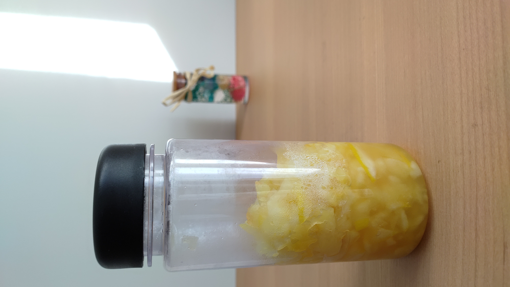
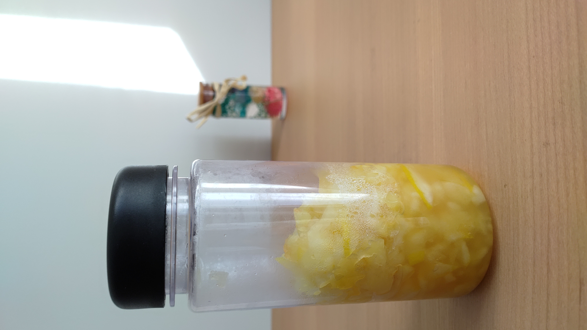

.jpg)
.jpg)

 

.jpg)
.jpg)
.jpg)

コンセプト
Reviewには①批評の意味と②見直すの意味がある！
自分たちがしたよい評価を基に観光客や地元の人たちにも信州に惚れ直してほしい・より多くの魅力を発見してほしい
動機
- 信州の伝統を知って守る
- 信州の特産品がたくさんあるけど、いまいち理解できていない
- 特産品を使って料理したい
- この辺はカフェが多いからカフェメニューを考えてみたい
作った物
山賊焼きプレート
メニュー
山賊焼きクルミドレッシングのサラダ
味噌ミルクスープ
材料
もも肉・二枚
●キャベツ・適量
●A濃口醤油・大さじ3
●料理酒・大さじ3
●みりん・大さじ1と1/2
●Aニンニクチューブ・小さじ2
●Aしょうがチューブ・小さじ2
●片栗粉・適量 ●油・適量
レシピ
①鶏肉を開き、Aを合わせて作ったたれに漬け込む。
②たれを軽く切り、鶏肉の両面に片栗粉をたっぷりとまぶす
③フライパンに高さ１㎝ほどのサラダ油をそそぎ、中火で熱する
④途中、火を少し弱め、油を回しかけ、6~7分ほど揚げ焼きにする
⑤裏返し、6~7分揚げ焼きする
Point
レシピ通りの漬け時間だと味が薄く感じられたので、漬け込む時間を伸ばすとなお良い
IHコンロでの調理だったので火の通りがイマイチだった
ガスコンロだと違ったかもしれない
りんごと紅茶マフィン
材料
りんご…1/2個
●卵…1個
●砂糖…大３
●牛乳…60㎖
●サラダ油…60g
★ホットケーキミックス…150g
★紅茶…4g
レシピ
①りんご・生姜・レモンを切る。
②鍋に①で切ったものと砂糖を入れ、水分が出るまで混ぜる。
③水を入れて、沸騰させる。
④アクを取り、落し蓋をして弱火で30分ほど煮込む。
⑤お湯またはよく冷やした炭酸水で割る。
Point
リンゴの種類はお好みで
リンゴは粉っぽさが残っているうちに加え、全体になじむまで混ぜるだけでOK
牛乳パンアレンジ
材料
リンゴ（シナノスイート）１個
レモンの皮
レモン汁小さじ２
砂糖50g
レシピ
①リンゴは皮ごといちょう切りにする
②レモンはキレイに洗って汁を絞り皮は細い千切りにする
③小鍋にリンゴ、レモン汁、砂糖を入れ、２０分ほど置く
④中火にかけ、湧いてきたら弱火にし、時々混ぜながら５分煮る
⑤その後、弱火で２分ほど煮詰めて、レモンの皮を加えてさらに２分ほど煮て完成
Point
温度が高すぎると水分が飛んでしまうので弱火で煮る
リンゴジンジャー
材料
りんご・・・１玉
生姜・・・35ｇ
レモン・・・1/2個
砂糖・・・100g
水・・・1カップ
レシピ
①りんご・生姜・レモンを切る。
②鍋に①で切ったものと砂糖を入れ、水分が出るまで混ぜる。
③水を入れて、沸騰させる。
④アクを取り、落し蓋をして弱火で30分ほど煮込む。
⑤お湯またはよく冷やした炭酸水で割る。
Point
リンゴ・生姜・レモンを細かく切ること
めげずに煮込み続けること